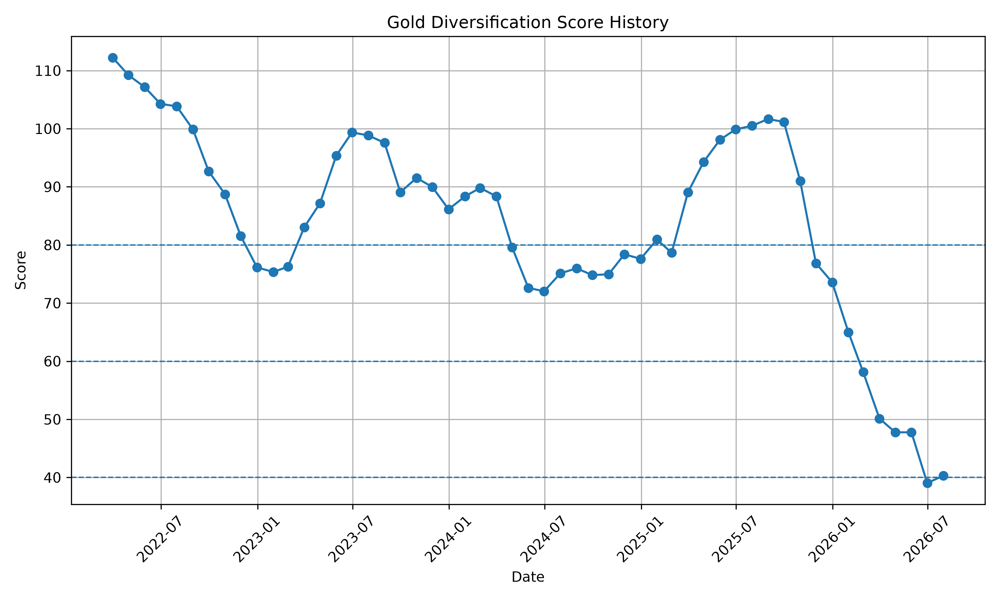
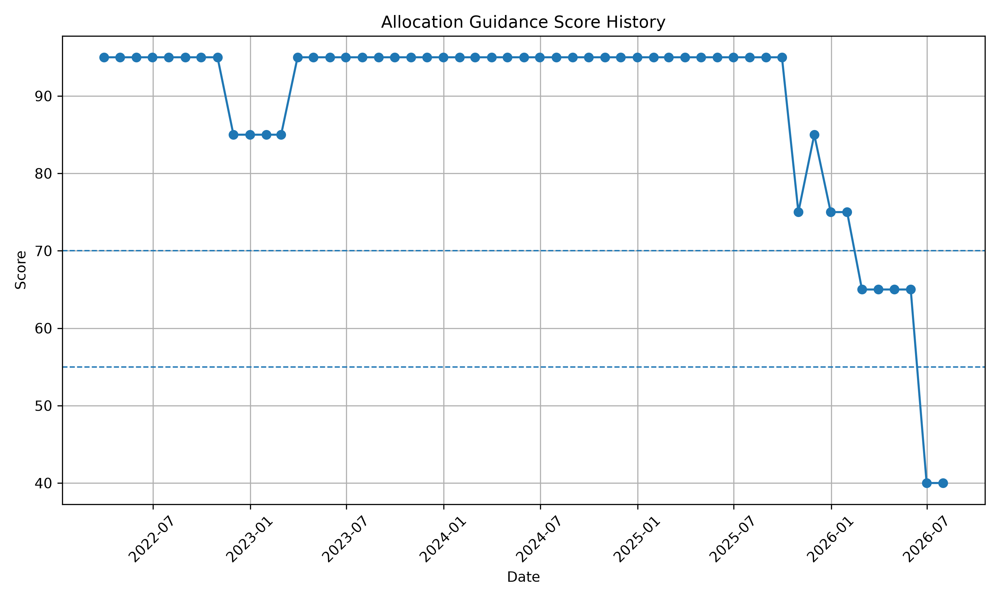
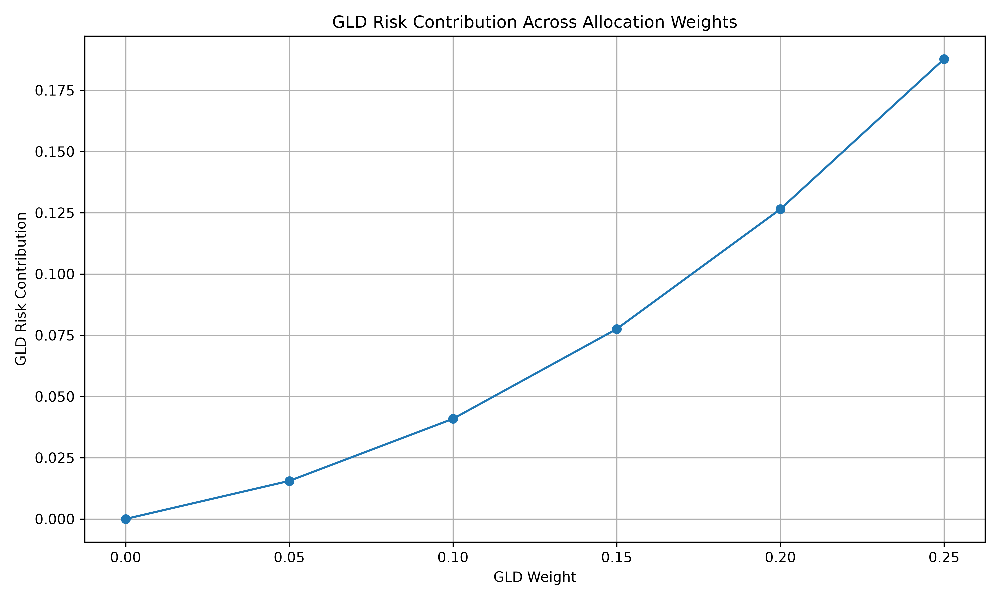

Last Updated: 2026-07-14 13:45:57
An automated research system for ETF monitoring, risk assessment, and portfolio allocation analysis.
Source type: observed_period_labelled (observed / observed_period_labelled)
Lowest component(s), including ties
Largest-drag component(s), including ties
Allocation source period label: 2026-07-31
Core market data as-of date: 2026-07-09
Analysis readiness: needs_review
Review warnings
hypothetical_not_observedconditional_non_predictive技术规则边界演示
Changed inputs
Preserved satisfied inputs
Failing predicates
Construction method: authoritative_candidate_search
Minimal definition: fewest changed observed input fields
Selection method: minimum_changed_fields_reaching_next_range
Tie breaker: lexicographic by input field, predicate ID, operator, and machine target
technical_rule_boundary_test: True
economic_materiality_assessed: False
robustness_buffer_tested: False
Metric Interpretation Report Gold Diversification Score: 62.07 Interpretation: Moderate diversification benefit. Gold contributes positively but requires continued monitoring. Alert Status: RED Interpretation: Multiple risk indicators indicate elevated stress. Defensive positioning should be considered. Recommended Allocation: 0%–5%. Interpretation: A conservative allocation range is suggested because current diversification contribution remains limited.
AI Portfolio Commentary
Generated Time:
2026-07-14 13:45:57
Portfolio Overview:
The system currently evaluates ETF allocation opportunities
through diversification analysis, risk monitoring, and research routing.
Gold Defensive Sleeve:
Gold ETF Research Dashboard v2.2
1. Research Verdict
GLD retains some diversification value, but allocation conditions are weak. Current supported range: 0%–5%.
2. Current Monitor Snapshot
- Gold Diversification Score: 62.07/100
- Score Status: Moderate
- Alert Level: Red
- Diversification Trend: Improving
3. Current Allocation View
- Allocation Guidance Score: 40.00/100
- Allocation Stance: Defensive
- Recommendation Confidence: Low
- Recommended Strategic Range: 0%–5%
- Best Marginal Step: 0% to 5%
4. Allocation Driver Summary
The defensive allocation view is mainly driven by elevated alert level, low allocation guidance score, high GLD/SPY volatility ratio, weak stress-period return support.
5. Latest Historical Allocation Snapshot
- Historical Date: 2026-07-31
- Historical Gold Diversification Score: 40.33/100
- Historical Status: Mixed
- Historical Alert Level: Red
- Historical Average GLD-equity Correlation: 0.38
- Historical GLD/SPY Volatility Ratio: 2.38
- Historical Stress Return Gap: -0.00%
6. Historical Trend Diagnostics
- One-month historical score change: 1.29
- One-month allocation guidance score change: 0.00
- Previous strategic range: 0%–5%
- Current strategic range: 0%–5%
- Previous alert level: Red
- Current alert level: Red
7. Research Use
Run scripts/run_all.py to refresh the full pipeline. Use this dashboard as the top-level project view, then read the monitor, alert, weekly memo, and allocation history files for deeper diagnostics.
Risk Assessment:
AI Portfolio Risk Monitor v4.4
Gold Diversification Score: 62.07/100
Diversification Status: Moderate
Key Signals:
- Average GLD-equity rolling correlation: 0.62
- GLD / SPY rolling volatility ratio: 1.79
- GLD stress return minus SPY stress return: 1.78%
- GLD portfolio risk contribution: 12.26%
Regime Impact:
- Stress Days: total return impact 4.94%; drawdown impact 4.99%
- Normal Days: total return impact 3.23%
- Strong Days: total return impact -159.55%
Risk Budget:
- 10% GLD: 4.09% risk contribution
- 15% GLD: 7.75% risk contribution
- 25% GLD: 18.78% risk contribution
Marginal Allocation Efficiency:
Range Return Change Volatility Change Drawdown Change Risk Contribution Change Efficiency Score
0% to 5% 3.14% -0.65% 0.75% 1.55% 3.83
5% to 10% 3.12% -0.58% 0.75% 2.53% 3.46
10% to 15% 3.10% -0.51% 0.74% 3.67% 3.03
15% to 20% 3.08% -0.42% 0.74% 4.89% 2.57
20% to 25% 3.04% -0.33% 0.74% 6.13% 2.10
Dynamic Allocation Guidance:
- Allocation Guidance Score: 95.00/100
- Recommendation Confidence: High
- Best marginal step: 0% to 5%
- Recommended strategic range: 5%–10%
- 5%–10%: efficient diversification zone
- 10%–15%: acceptable tactical range
- 20%–25%: aggressive range; GLD consumes disproportionate risk budget
Allocation Rationale:
The best marginal step identifies the single most efficient incremental GLD increase. The recommended strategic range reflects the broader allocation zone supported by stress-regime protection and risk-budget control.
Research Note:
This monitor is not a trading signal. It is a research tool for tracking GLD's diversification conditions within a multi-asset ETF portfolio.
Research Priority:
Lobster Research Router v2
1. Next Deep-Dive Candidate
- ETF: GLD
- Role Tag: Defensive Diversification Sleeve
- Research Priority: High
- ETF Stance: Defensive
- Final ETF Score: 29.79/100
- Deep-Dive Status: Completed Deep-Dive Module
- Router v2 Score: 101.43
- Router Reason: high watchlist priority, weak ETF score requiring review, weak momentum, elevated risk, negative 3M return, completed Gold Engine available
2. Ranked Research Queue
1. GLD
- Role Tag: Defensive Diversification Sleeve
- Research Priority: High
- ETF Stance: Defensive
- Final ETF Score: 29.79/100
- Momentum Flag: Weak
- Risk Flag: High Risk
- 3M Return: -13.64%
- 3M Max Drawdown: -17.94%
- Deep-Dive Status: Completed Deep-Dive Module
- Router v2 Score: 101.43
- Router Reason: high watchlist priority, weak ETF score requiring review, weak momentum, elevated risk, negative 3M return, completed Gold Engine available
2. XLK
- Role Tag: Growth / Sector Sleeve
- Research Priority: Medium
- ETF Stance: Neutral
- Final ETF Score: 65.97/100
- Momentum Flag: Strong
- Risk Flag: High Risk
- 3M Return: 30.46%
- 3M Max Drawdown: -10.89%
- Deep-Dive Status: Light Deep-Dive Candidate
- Router v2 Score: 85.09
- Router Reason: strong momentum, elevated risk, growth-sleeve monitor candidate
3. QQQ
- Role Tag: Growth / Sector Sleeve
- Research Priority: Medium
- ETF Stance: Constructive
- Final ETF Score: 74.13/100
- Momentum Flag: Strong
- Risk Flag: Normal
- 3M Return: 18.53%
- 3M Max Drawdown: -7.03%
- Deep-Dive Status: Future Growth Module Candidate
- Router v2 Score: 80.94
- Router Reason: strong ETF score, strong momentum
4. TLT
- Role Tag: Rate-Sensitive Defensive Sleeve
- Research Priority: Medium
- ETF Stance: Neutral
- Final ETF Score: 61.37/100
- Momentum Flag: Weak
- Risk Flag: Defensive
- 3M Return: -2.55%
- 3M Max Drawdown: -4.80%
- Deep-Dive Status: Future Defensive Module Candidate
- Router v2 Score: 77.48
- Router Reason: weak momentum, negative 3M return
5. SPY
- Role Tag: Core Equity Sleeve
- Research Priority: Low
- ETF Stance: Constructive
- Final ETF Score: 75.46/100
- Momentum Flag: Strong
- Risk Flag: Defensive
- 3M Return: 10.56%
- 3M Max Drawdown: -4.49%
- Deep-Dive Status: Benchmark / Core Reference
- Router v2 Score: 52.41
- Router Reason: strong ETF score, strong momentum
3. Router v2 Interpretation
The Router v2 combines ETF attractiveness score, watchlist priority, portfolio role, risk condition, momentum condition, recent deterioration, and deep-dive module availability. This gives Lobster a stronger research routing layer than the original rule-based router.
4. Current System Link
If GLD remains the top-ranked ETF, the completed Gold Engine remains the active deep-dive module. If XLK ranks highly, it becomes the next growth-sleeve monitoring candidate for the v2 system.
Investment Interpretation:
The portfolio maintains a risk-aware allocation framework.
Gold is monitored as a defensive diversification component,
while equity growth exposure requires continuous evaluation
under changing market conditions.
The research engine prioritizes assets with significant
risk-return characteristics for further investigation.
Lobster System Status Agent Run Time: 2026-07-10 20:00:23 System Status: Healthy - OK Files: 23 - Empty Files: 0 - Missing Files: 0 Critical Output Check - OK: reports/08_agent_ops/data_update_log.txt (687 bytes) - OK: reports/08_agent_ops/data_quality_report.csv (315 bytes) - OK: reports/08_agent_ops/data_quality_summary.txt (498 bytes) - OK: reports/08_agent_ops/pipeline_run_log.txt (2876 bytes) - OK: reports/06_score_and_monitor/gold_diversification_score.csv (351 bytes) - OK: reports/06_score_and_monitor/diversification_alert.txt (941 bytes) - OK: reports/06_score_and_monitor/ai_risk_monitor_report.txt (1952 bytes) - OK: reports/06_score_and_monitor/allocation_history.csv (8327 bytes) - OK: reports/06_score_and_monitor/allocation_history_summary.txt (1215 bytes) - OK: reports/06_score_and_monitor/gold_signal_dashboard.txt (1493 bytes) - OK: reports/06_score_and_monitor/gold_dashboard_pack.md (2813 bytes) - OK: reports/06_score_and_monitor/gold_div_score_history.png (189394 bytes) - OK: reports/06_score_and_monitor/allocation_guidance_history.png (133104 bytes) - OK: reports/06_score_and_monitor/gld_risk_budget_curve.png (134942 bytes) - OK: reports/07_lobster_watchlist/etf_watchlist_snapshot.csv (1610 bytes) - OK: reports/07_lobster_watchlist/etf_watchlist_summary.txt (608 bytes) - OK: reports/07_lobster_watchlist/etf_score_table.csv (1243 bytes) - OK: reports/07_lobster_watchlist/etf_score_summary.txt (880 bytes) - OK: reports/07_lobster_watchlist/lobster_dashboard.txt (1765 bytes) - OK: reports/07_lobster_watchlist/lobster_research_router.txt (2815 bytes) - OK: reports/07_lobster_watchlist/lobster_weekly_memo.txt (2920 bytes) - OK: reports/08_growth_sleeve/xlk_vs_spy_summary.csv (615 bytes) - OK: reports/08_growth_sleeve/xlk_growth_monitor.txt (1014 bytes)
| ETF | Role Tag | Research Priority | Momentum Flag | Risk Flag | 1M Return | 3M Return | Annualized Volatility | 3M Max Drawdown | Momentum Score | Risk Score | Drawdown Score | Role Score | Final ETF Score | ETF Stance |
|---|---|---|---|---|---|---|---|---|---|---|---|---|---|---|
| SPY | Core Equity Sleeve | Low | Strong | Defensive | 0.016896 | 0.105602 | 0.130370 | -0.044947 | 84.215125 | 73.926059 | 77.526749 | 60 | 75.462158 | Constructive |
| QQQ | Growth / Sector Sleeve | Medium | Strong | Normal | 0.010069 | 0.185336 | 0.236838 | -0.070320 | 100.000000 | 52.632489 | 64.839999 | 65 | 74.126122 | Constructive |
| XLK | Growth / Sector Sleeve | Medium | Strong | High Risk | 0.006353 | 0.304639 | 0.322834 | -0.108874 | 100.000000 | 35.433290 | 45.562784 | 65 | 65.970879 | Neutral |
| TLT | Rate-Sensitive Defensive Sleeve | Medium | Weak | Defensive | -0.001536 | -0.025490 | 0.091280 | -0.048045 | 42.122493 | 81.743912 | 75.977511 | 55 | 61.374353 | Neutral |
| GLD | Defensive Diversification Sleeve | High | Weak | High Risk | -0.048053 | -0.136398 | 0.238507 | -0.179423 | 1.872683 | 52.298547 | 10.288632 | 70 | 29.787802 | Defensive |
AI Portfolio Risk Monitor v4.4
Gold Diversification Score: 62.07/100
Diversification Status: Moderate
Key Signals:
- Average GLD-equity rolling correlation: 0.62
- GLD / SPY rolling volatility ratio: 1.79
- GLD stress return minus SPY stress return: 1.78%
- GLD portfolio risk contribution: 12.26%
Regime Impact:
- Stress Days: total return impact 4.94%; drawdown impact 4.99%
- Normal Days: total return impact 3.23%
- Strong Days: total return impact -159.55%
Risk Budget:
- 10% GLD: 4.09% risk contribution
- 15% GLD: 7.75% risk contribution
- 25% GLD: 18.78% risk contribution
Marginal Allocation Efficiency:
Range Return Change Volatility Change Drawdown Change Risk Contribution Change Efficiency Score
0% to 5% 3.14% -0.65% 0.75% 1.55% 3.83
5% to 10% 3.12% -0.58% 0.75% 2.53% 3.46
10% to 15% 3.10% -0.51% 0.74% 3.67% 3.03
15% to 20% 3.08% -0.42% 0.74% 4.89% 2.57
20% to 25% 3.04% -0.33% 0.74% 6.13% 2.10
Dynamic Allocation Guidance:
- Allocation Guidance Score: 95.00/100
- Recommendation Confidence: High
- Best marginal step: 0% to 5%
- Recommended strategic range: 5%–10%
- 5%–10%: efficient diversification zone
- 10%–15%: acceptable tactical range
- 20%–25%: aggressive range; GLD consumes disproportionate risk budget
Allocation Rationale:
The best marginal step identifies the single most efficient incremental GLD increase. The recommended strategic range reflects the broader allocation zone supported by stress-regime protection and risk-budget control.
Research Note:
This monitor is not a trading signal. It is a research tool for tracking GLD's diversification conditions within a multi-asset ETF portfolio.
Lobster Research Router v2 1. Next Deep-Dive Candidate - ETF: GLD - Role Tag: Defensive Diversification Sleeve - Research Priority: High - ETF Stance: Defensive - Final ETF Score: 29.79/100 - Deep-Dive Status: Completed Deep-Dive Module - Router v2 Score: 101.43 - Router Reason: high watchlist priority, weak ETF score requiring review, weak momentum, elevated risk, negative 3M return, completed Gold Engine available 2. Ranked Research Queue 1. GLD - Role Tag: Defensive Diversification Sleeve - Research Priority: High - ETF Stance: Defensive - Final ETF Score: 29.79/100 - Momentum Flag: Weak - Risk Flag: High Risk - 3M Return: -13.64% - 3M Max Drawdown: -17.94% - Deep-Dive Status: Completed Deep-Dive Module - Router v2 Score: 101.43 - Router Reason: high watchlist priority, weak ETF score requiring review, weak momentum, elevated risk, negative 3M return, completed Gold Engine available 2. XLK - Role Tag: Growth / Sector Sleeve - Research Priority: Medium - ETF Stance: Neutral - Final ETF Score: 65.97/100 - Momentum Flag: Strong - Risk Flag: High Risk - 3M Return: 30.46% - 3M Max Drawdown: -10.89% - Deep-Dive Status: Light Deep-Dive Candidate - Router v2 Score: 85.09 - Router Reason: strong momentum, elevated risk, growth-sleeve monitor candidate 3. QQQ - Role Tag: Growth / Sector Sleeve - Research Priority: Medium - ETF Stance: Constructive - Final ETF Score: 74.13/100 - Momentum Flag: Strong - Risk Flag: Normal - 3M Return: 18.53% - 3M Max Drawdown: -7.03% - Deep-Dive Status: Future Growth Module Candidate - Router v2 Score: 80.94 - Router Reason: strong ETF score, strong momentum 4. TLT - Role Tag: Rate-Sensitive Defensive Sleeve - Research Priority: Medium - ETF Stance: Neutral - Final ETF Score: 61.37/100 - Momentum Flag: Weak - Risk Flag: Defensive - 3M Return: -2.55% - 3M Max Drawdown: -4.80% - Deep-Dive Status: Future Defensive Module Candidate - Router v2 Score: 77.48 - Router Reason: weak momentum, negative 3M return 5. SPY - Role Tag: Core Equity Sleeve - Research Priority: Low - ETF Stance: Constructive - Final ETF Score: 75.46/100 - Momentum Flag: Strong - Risk Flag: Defensive - 3M Return: 10.56% - 3M Max Drawdown: -4.49% - Deep-Dive Status: Benchmark / Core Reference - Router v2 Score: 52.41 - Router Reason: strong ETF score, strong momentum 3. Router v2 Interpretation The Router v2 combines ETF attractiveness score, watchlist priority, portfolio role, risk condition, momentum condition, recent deterioration, and deep-dive module availability. This gives Lobster a stronger research routing layer than the original rule-based router. 4. Current System Link If GLD remains the top-ranked ETF, the completed Gold Engine remains the active deep-dive module. If XLK ranks highly, it becomes the next growth-sleeve monitoring candidate for the v2 system.
Lobster Weekly Research Memo v2 1. Weekly Research Focus The current Router v2 deep-dive candidate is GLD. - Role Tag: Defensive Diversification Sleeve - Research Priority: High - ETF Stance: Defensive - Final ETF Score: 29.79/100 - Router v2 Score: 101.43 - Router Reason: high watchlist priority, weak ETF score requiring review, weak momentum, elevated risk, negative 3M return, completed Gold Engine available 2. ETF Market Snapshot - Best 3M performer: XLK (30.46%) - Weakest 3M performer: GLD (-13.64%) - Highest-volatility ETF: XLK (32.28%) 3. ETF Score Ranking 1. SPY — 75.46/100, Constructive, Core Equity Sleeve 2. QQQ — 74.13/100, Constructive, Growth / Sector Sleeve 3. XLK — 65.97/100, Neutral, Growth / Sector Sleeve 4. TLT — 61.37/100, Neutral, Rate-Sensitive Defensive Sleeve 5. GLD — 29.79/100, Defensive, Defensive Diversification Sleeve 4. Defensive Sleeve Update: GLD - GLD ETF Score: 29.79/100 - GLD ETF Stance: Defensive - Gold Diversification Score: 62.07/100 - Score Status: Moderate - Alert Level: Red - Allocation Stance: Defensive - Recommended Strategic Range: 0%–5% Interpretation: GLD remains the completed defensive diversification deep-dive module. However, the Gold Engine remains cautious, so the system does not support aggressive GLD allocation under current conditions. 5. Growth Sleeve Update: XLK - XLK ETF Score: 65.97/100 - XLK ETF Stance: Neutral - XLK 3M Return: 30.46% - SPY 3M Return: 10.56% - XLK 3M Excess Return: 19.90% - XLK Volatility Premium: 19.25% - Growth Sleeve Score: 71.48/100 - Growth Sleeve Risk Flag: High Growth Risk - Tactical Growth Stance: Constructive Growth Sleeve Interpretation: XLK shows strong growth leadership relative to SPY, but the growth signal comes with elevated volatility. It should be monitored as a constructive but high-risk growth / sector sleeve. 6. Router v2 Decision The Router v2 combines ETF score, watchlist priority, portfolio role, momentum condition, risk condition, recent deterioration, and deep-dive module availability. Current decision: - Active deep-dive candidate: GLD - Main reason: high watchlist priority, weak ETF score requiring review, weak momentum, elevated risk, negative 3M return, completed Gold Engine available 7. Weekly Research Conclusion Lobster v2 currently shows a two-sleeve research structure: - GLD is the defensive diversification sleeve with a completed deep-dive engine. - XLK is the growth / sector sleeve with strong recent performance but high volatility risk. The portfolio research stance is therefore mixed: GLD remains useful for defensive monitoring, while XLK provides growth leadership but requires risk control. 8. Next Action Maintain GLD as the active completed defensive module. Continue monitoring XLK as the first growth-sleeve prototype. The next possible system extension should be either a TLT defensive-rate module or a QQQ growth comparison module.


